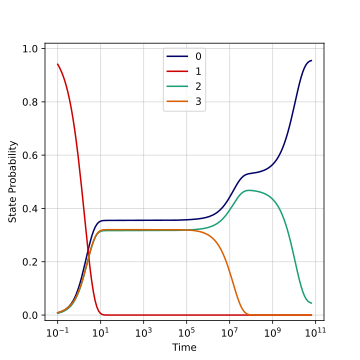
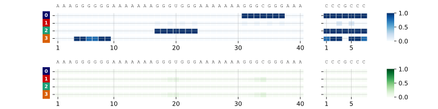
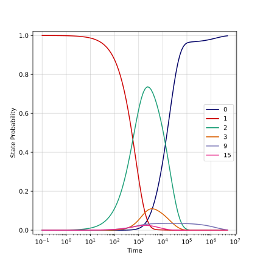
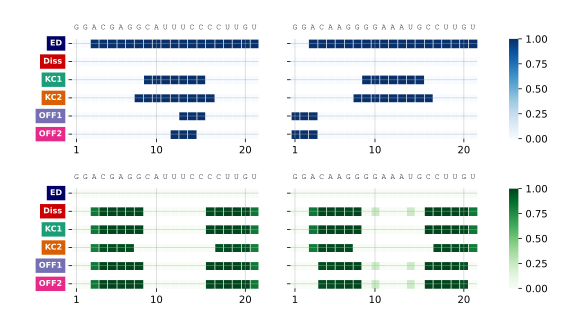
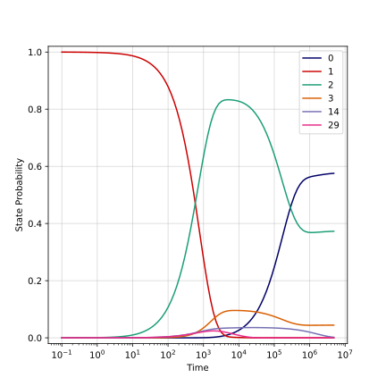
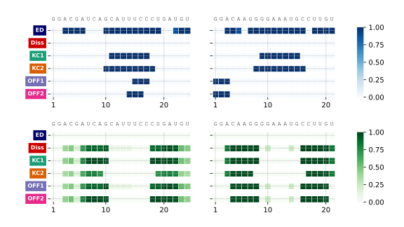
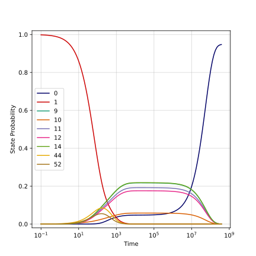
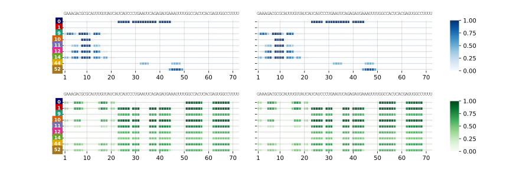
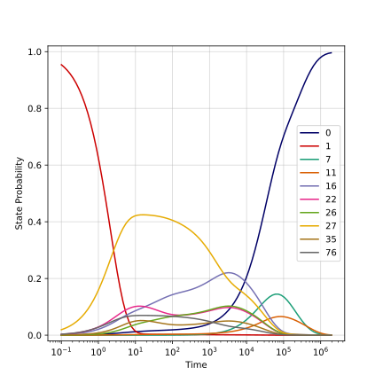
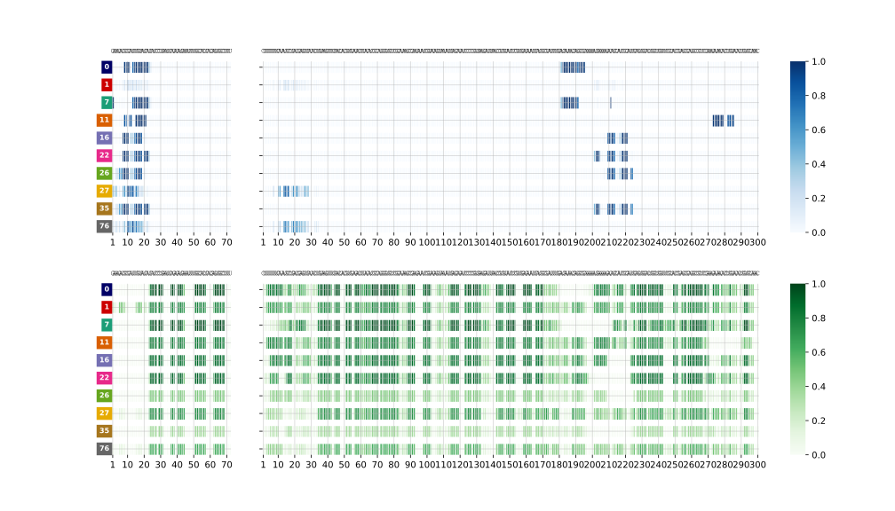

- Generated by
 1.9.8
1.9.8
|
RIkin
|
This directory contains a set of biologically motivated example runs for RIKin, alongside the scripts used to reproduce them and the plots shown in the top-level `README.md`.
exampleA.fasta, exampleB.fasta, HP1.fasta, HP2.fasta, HP3.fasta, MicA.fasta, OmpA.fasta).*.cfg) — per-example JSON overrides, deep-merged on top of rikin_pipeline.cfg (see the main README's Configuration file section for the schema).run-all.sh** — runs rikin_pipeline.py for every example below, in one go.plot_kinetics.py** — a Jupytext notebook (light-format .py, pairs with a .ipynb) that loads each example's results with rikinplotlib.RikinRun and regenerates the figures used throughout this repository.Plots/** — the figures (SVG + PDF) produced by plot_kinetics.py, including the ones embedded in the top-level README.A short synthetic RNA pair, used as the minimal illustrative example in the main README (see the Quick example section there):
or equivalently, from the FASTA files in this directory:
| Kinetics | Top states |
|---|---|
 |  |
Two designed hairpins that interact via a "kissing" loop–loop interaction, run against two different partner hairpins:
| HP1:HP2 kinetics | HP1:HP2 states |
|---|---|
 |  |
| HP3:HP2 kinetics | HP3:HP2 states |
|---|---|
 |  |
E. coli MicA is a small regulatory sRNA; here its self-interaction (homodimerization) is analyzed:
| MicA-MicA kinetics | MicA-MicA states |
|---|---|
 |  |
MicA's biological target: the 5′UTR of the ompA mRNA (translation of which MicA represses upon binding):
| MicA-OmpA kinetics | MicA-OmpA states |
|---|---|
 |  |
run-all.sh runs all of the above in sequence:
Once the runs above have produced their output directories, plot_kinetics.py loads each one and renders the full set of figures (state-probability kinetics, top-state structures, interaction dotplots, and per-nucleotide paired-probability kinetics) into Plots/.
Open plot_kinetics.ipynb directly in Jupyter/JupyterLab and run it:
It's paired with plot_kinetics.py via Jupytext (light format), so the two stay in sync if you prefer editing the .py version in a plain text editor or IDE.